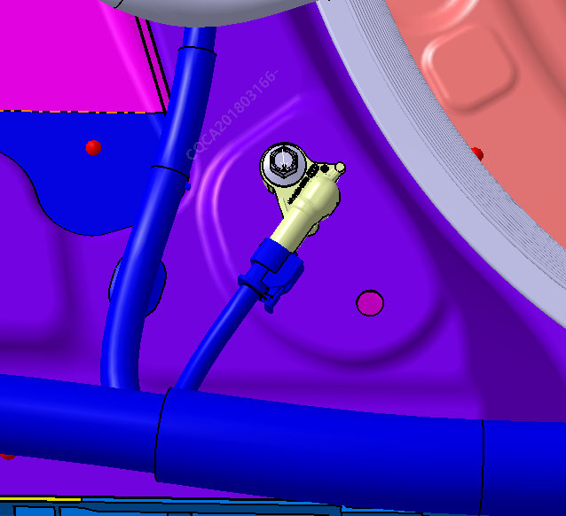

Снятие
Снять сиденья.
Ссылка: глава Узел передних сидений
Снять внутреннюю облицовочную панель порога и нижнюю внутреннюю облицовочную панель стойки B.
Ссылка: глава Снятие и установка облицовочной панели стойки B
Выкрутить крепежные болты Датчик бокового удара
Момент затяжки: 10 ± 1 N.m

Отсоединить электрический разъем Датчик бокового удара.
Установка
Установка выполняется в порядке, обратном снятию.
Датчик бокового удара необходимо брать с осторожностью, при сборке избегать ударов, стуков и падений. Запрещается самостоятельно вскрывать корпус. После затяжки датчика необходимо проверить, чтобы момент затяжки крепежных болтов составлял не менее 10 N•m.
Перед демонтажом Датчик бокового удара необходимо убедиться, что автомобиль находится в выключенном состоянии.